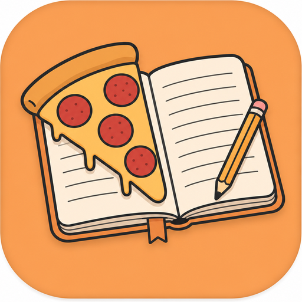
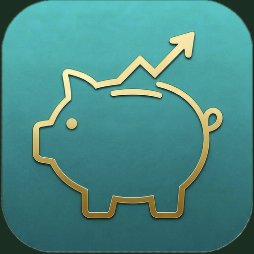
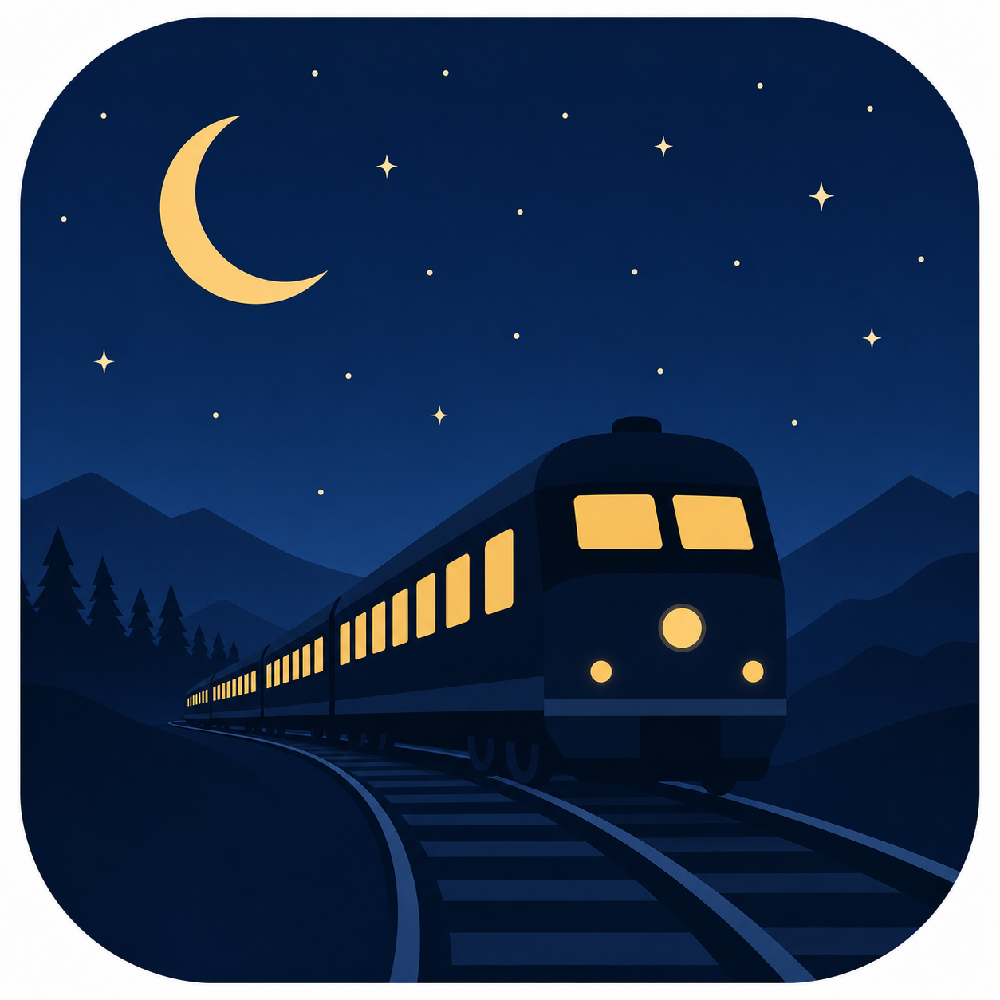

Projekthyllan
07 appar / byggda med nyfikenhet
Pizza Diary
VerktygPizzanördarnas himmelrike. Logga dina degar, håll koll på varenda liten variabel. Ändra till nästa gång för att se förbättring.

Sparapp
EkonomiDreams kostar pengar. Här har du din egna manuella gratisversion som uppmanar dig att INVESTERA pengarna, inte bara ett mjäkigt sparkonto utan ränta.

This Week
PlaneringLite mindre kaos, en vecka i taget. Samla dina att-göra, välj en dag när det behövs och flytta resten till nästa vecka.
Milestones
FirandeHåll koll på roliga kommande datum för dig och din familj och vänner - 10 000 dagar, en miljard sekunder och annat värt att fira.
TeMailplate
VerktygMailmallar med utbytbara fält. Ska du skriva många snarlika mail med små ändringar? Klistra in mailet, fyll i Placeholders, kopiera, skicka, drick ditt kaffe.
Music Imposter
SpelVem känner inte av viben?

Tågluff
ResaResplanering for tågluffsaventyr 2026. För inspo.